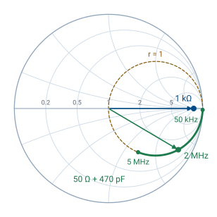

L16 - Reflection and Transmission Coefficient Lab II#
Reflection and Transmission Coefficient Lab II
Today you identify a device you cannot see from what it reflects and what it passes.
Lesson 16 · Module 1: Foundations · Maj Ellis · Dr. Neil Rogers
Learning Objectives
- I can measure the reflection coefficient across a range of frequencies and interpret the measurement using a network analyzer.
Lesson 15 measured loads you could predict. Today the device under test (DUT) is a filter with its label taped over, and you work out what it is from two measurements: \(S_{11}\), the wave it reflects, and \(S_{21}\), the wave it passes. You find the filter type, its cutoff frequency or frequencies, and where in its band it looks capacitive or inductive. The DUT has SMA connectors, so you recalibrate with SMA standards first.
Where We Were
Lesson 15: calibrate, then measure \(S_{11} = \Gamma\)
Load |
Measured \(\vert S_{11}\vert\) |
|---|---|
Open, short, capacitor |
\(\approx 0\) dB |
\(1\ \text{k}\Omega\) |
\(\approx -0.9\) dB |
\(50\ \Omega\) + 470 pF, 2 MHz |
\(\approx -1.3\) dB |
\(50\ \Omega\) |
\(-30\) dB or lower |
Last lesson every load was a single impedance on port 1, so the only quantity that mattered was \(S_{11}\). The open, the short, and the capacitor dissipated nothing and reflected everything; the \(1\ \text{k}\Omega\) resistor reflected most of the wave; the series resistor and capacitor reflected less as the frequency rose; the matched load reflected almost none of it. A filter has two ports, so today the wave that gets through, \(S_{21}\), matters as much as the wave that comes back.
The Two Mismatches on the Chart

Each point on the chart is a value of \(\Gamma\), and the ray from the center to it has length \(\vert\Gamma\vert\) and angle equal to the phase of \(\Gamma\). The \(1\ \text{k}\Omega\) resistor has \(z = 20\), a real impedance, so it sits on the real axis at \(\Gamma = 0.905\angle 0^\circ\), and it stays there at every frequency because a resistor’s impedance does not change with frequency. The complex load, the \(50\ \Omega\) resistor in series with the 470 pF capacitor, has \(r = 1\) at every frequency, so it moves along the \(r = 1\) circle. At 50 kHz its reactance is \(-j6773\ \Omega\) and it sits near the open. As the frequency rises the reactance shrinks, and the point moves down the circle toward the center: \(0.861\angle -30.6^\circ\) at 2 MHz and \(0.561\angle -55.9^\circ\) at 5 MHz. A series inductor with the opposite reactance would carry it the rest of the way to the center, the series match of Lesson 12.
A Two-Port Device
Port 1 sends a wave of amplitude \(a\) toward the DUT.
\(S_{11}a\) comes back to port 1; \(S_{21}a\) arrives at port 2.
Port 2 is a \(50\ \Omega\) receiver, so nothing reflects from it.
The DUT sits between the analyzer’s two ports. Port 1 launches the incident wave, and the analyzer measures two ratios at each frequency: the reflected wave over the incident wave, \(S_{11}\), and the transmitted wave over the incident wave, \(S_{21}\). Port 2 is a matched receiver, so it absorbs the transmitted wave, and nothing bounces back into the DUT. \(S_{21}\) is the transmission coefficient for the whole device, the two-port counterpart of the \(T = 1 + \Gamma\) of Lesson 6.
What a Lossless Filter Must Do
Power in equals power out:
A filter built from inductors and capacitors stores energy but dissipates almost none, so every bit of power the incident wave carries in must leave as either the reflected wave or the transmitted wave. Each wave travels on a line of impedance \(Z_0\), so its power is its amplitude squared over \(2Z_0\), the result of Lesson 7. We write the balance, cancel the common factor \(\vert a\vert^2/2Z_0\), and get the result. A filter does not absorb the frequencies it rejects; it reflects them. Where \(\vert S_{21}\vert\) is near \(0\) dB, \(\vert S_{11}\vert\) is low, and where \(\vert S_{21}\vert\) falls, \(\vert S_{11}\vert\) rises toward \(0\) dB.
Naming the Filter
\(\vert S_{21}\vert\) near 0 dB at |
Filter |
|---|---|
low frequencies only |
low-pass |
high frequencies only |
high-pass |
one band in the middle |
band-pass |
everywhere but one band |
band-stop |
The passband is where \(\vert S_{21}\vert\) sits near \(0\) dB, and the stopband is where it falls far below. Sweep wide enough to see both, then read the type off the blue \(\vert S_{21}\vert\) trace. The yellow \(\vert S_{11}\vert\) trace should mirror it, low where the filter passes and near \(0\) dB where it rejects. A real filter has a little loss, so \(\vert S_{21}\vert\) in the passband reads a fraction of a dB below zero.
The Cutoff Frequency
Half the power gets through:
The cutoff frequency is the edge of the passband, defined as the frequency where the transmitted power falls to half its passband value. Power goes as the square of the wave amplitude, so half the power means an amplitude ratio of \(1/\sqrt{2}\). Converting with \(20\log_{10}\) gives \(-3\) dB, which is why the cutoff is called the \(-3\) dB point. Set a marker on the \(\vert S_{21}\vert\) trace and move it until it reads \(3\) dB below the passband level. A band-pass or band-stop filter has two such points. For a lossless filter, the power balance puts \(\vert S_{11}\vert\) at \(-3\) dB at the same frequency.
Reactance from the Smith Chart
The marker reports \(Z = R + jX\) at frequency \(f\), with \(\omega = 2\pi f\).
\(X\) |
Looks like |
Element |
|---|---|---|
\(X < 0\) |
a capacitor, \(X = -\frac{1}{\omega C}\) |
\(C = -\frac{1}{\omega X}\) |
\(X > 0\) |
an inductor, \(X = \omega L\) |
\(L = \frac{X}{\omega}\) |
The Smith chart marker reads the impedance the DUT presents at port 1. The sign of the reactance tells you which kind of element the DUT looks like at that frequency: negative in the lower half of the chart, capacitive; positive in the upper half, inductive. To get the equivalent element value, we set the measured \(X\) equal to the reactance of a capacitor or an inductor and solve. A capacitor has \(X = -1/(\omega C)\), so \(C = -1/(\omega X)\). An inductor has \(X = \omega L\), so \(L = X/\omega\). The value describes the DUT at that one frequency only; as the marker moves, the equivalent value changes, because a filter is a network of several elements, not one.
Example: Reading a Marker
Marker |
Element |
|---|---|
\(Z = 42 - j30\ \Omega\) at 10 MHz |
\(C = \frac{1}{2\pi(10^7)(30)} = 531\) pF |
\(Z = 55 + j40\ \Omega\) at 10 MHz |
\(L = \frac{40}{2\pi(10^7)} = 637\) nH |
Suppose the marker reads \(42 - j30\ \Omega\) at 10 MHz. The reactance is negative, so the DUT looks capacitive there, and \(C = -1/(\omega X) = 1/(2\pi \times 10^7 \times 30) = 531\) pF. If at the same frequency it read \(55 + j40\ \Omega\) instead, the DUT would look inductive, with \(L = 40/(2\pi \times 10^7) = 637\) nH. In the lab, record the frequency range over which the trace stays in each half of the chart, and one equivalent value in each range.
Recalibrating with SMA Standards
The DUT has SMA connectors, so the grabber-clip cable comes off and the calibration from Lesson 15 no longer applies.
Pause the sweep. Remove the SMA-to-BNC adapter and the grabber-clip cable.
Choose Stimulus and set a range that covers your filter’s band. Your instructor gives the starting range; widen it if you cannot see both the passband and the stopband.
Choose Cal, then Reset.
Connect the SMA cable to channel 0 and, at its free end, attach the SMA open, short, and load standards in turn, tapping Open, Short, and Load.
Optionally, connect the channel 0 and channel 1 cables with the SMA coupler and tap Thru.
Tap Done and confirm that the analyzer highlights Correction.
Procedure: The Black Box
Tape covers the label on the DUT. Leave the tape in place.
Connect the DUT between the channel 0 and channel 1 cables and restart the sweep.
From the \(\vert S_{21}\vert\) and \(\vert S_{11}\vert\) traces, name the filter type and say how you know.
Find the \(-3\) dB cutoff frequency, or both of them for a band-pass or band-stop filter.
Move the Smith chart marker across the band. Record where the DUT looks capacitive and where it looks inductive, and compute an equivalent \(C\) or \(L\) in each range.
Make at least one more observation about your measurements.
Lab Packet
Today’s questions are Measurement 6 of the same packet you started in Lesson 15. Each team of two or three submits one combined report on Gradescope covering both lab periods.
Where This Is Going
Lesson 17: Module 2 begins with vectors and coordinate systems, the language of fields.
This lab closes Module 1. Everything so far has lived on a transmission line, where voltage and current along one coordinate tell the whole story. Module 2 steps off the line into three-dimensional space, where the electric and magnetic fields are vectors that vary in every direction. Lesson 17 reviews the vector algebra and the three coordinate systems the rest of the course uses.
Before Lesson 17, read Chapter 4 of Ellingson.